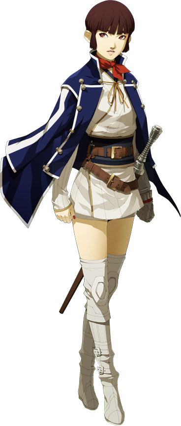
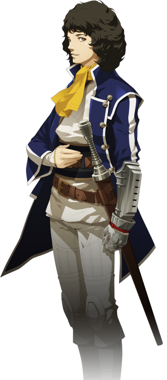
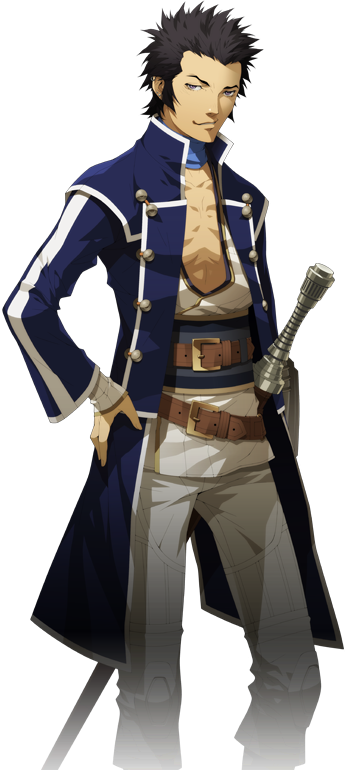
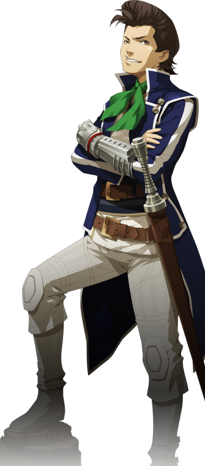
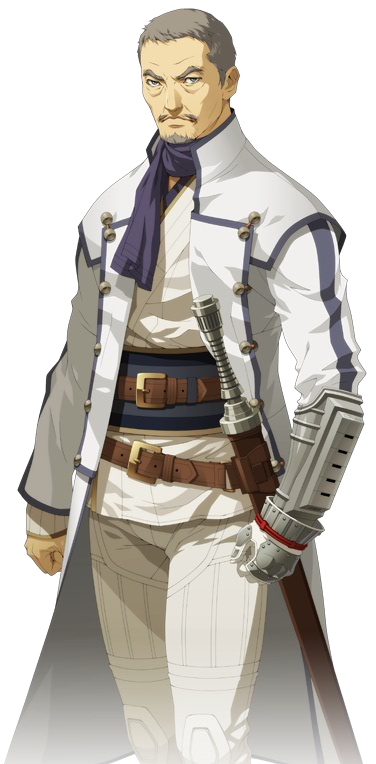
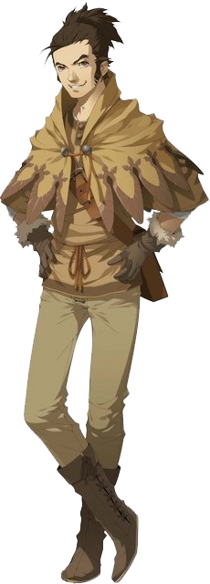
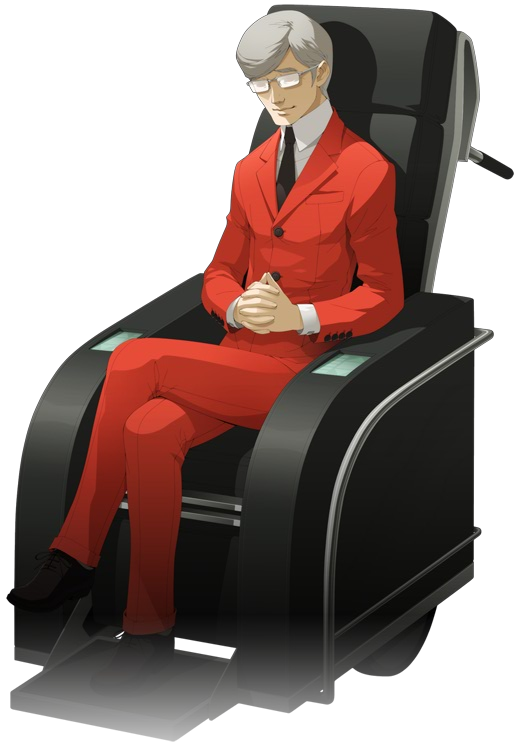

| Shin Megami Tensei IV | |
|---|---|

|
|
| Nome original: | 真・女神転生 IV |
| Ano de lançamento: | 2013 no Japão e no Ocidente |
| Plataforma(s): | Nintendo 3DS |
Shin Megami Tensei IV
Shin Megami Tensei IV é o quarto jogo numerado da série Shin Megami Tensei desenvolvido pela Atlus para o Nintendo 3DS. Uma seqência direta, intitulada Shin Megami Tensei IV Apocalypse, foi lançada em 10 de fevereiro de 2016 no Japão e em 20 de setembro de 2016 na América do Norte.
| Contents |
|---|
1. Plot
Shin Megami Tensei IV começa com Flynn e seu amigo Issachar viajando para o Castelo de Mikado para passar por um teste para saber se eles são dignos de se tornarem Samurais, os guardiões de Mikado que tanto confrontam quanto controlam demônios. Issachar falha, mas Flynn se sai bem e é imediatamente iniciado junto com outros candidatos, incluindo Walter, Jonathan e Isabeau. Os novos aprendizes Samurai recebem luvas eletrônicas contendo IAs. A IA de Flynn, Burroughs, o apoia durante todo o jogo com conselhos. Pouco depois de sua iniciação, a inquietação aumenta no interior quando uma figura que se autodenomina "Samurai Negra" distribui livros amaldiçoados escritos para espalhar "conhecimento e sabedoria"; alguns residentes de Mikado, incluindo Issachar, são transformados em demônios após lerem os livros em reuniões chamadas "Sabbaths". Os Samurais são enviados para confrontar os demônios que surgiram e a Samurai Negra. Depois de restaurar a ordem em Mikado e matar Issachar, os Samurais são instruídos a perseguir a Samurai Negra até a lendária terra que fica abaixo de Mikado, Tóquio. Os Samurais descem um túnel que leva ao topo de um arranha-céu; eles descobrem que Tóquio é uma cidade coberta por uma cúpula de rocha que a trancou numa noite eterna, enquanto Mikado se estende na superfície da cúpula. O grupo explora Tóquio em busca da Samurai Negra, enfrentando uma variedade de inimigos: os demônios que infestam Tóquio; o Ashura-kai, uma organização yakuza que governa a cidade e meio que bota ordem; e o Anel de Gaea, um culto dedicado à sua líder Yuriko.
2. Personagens







